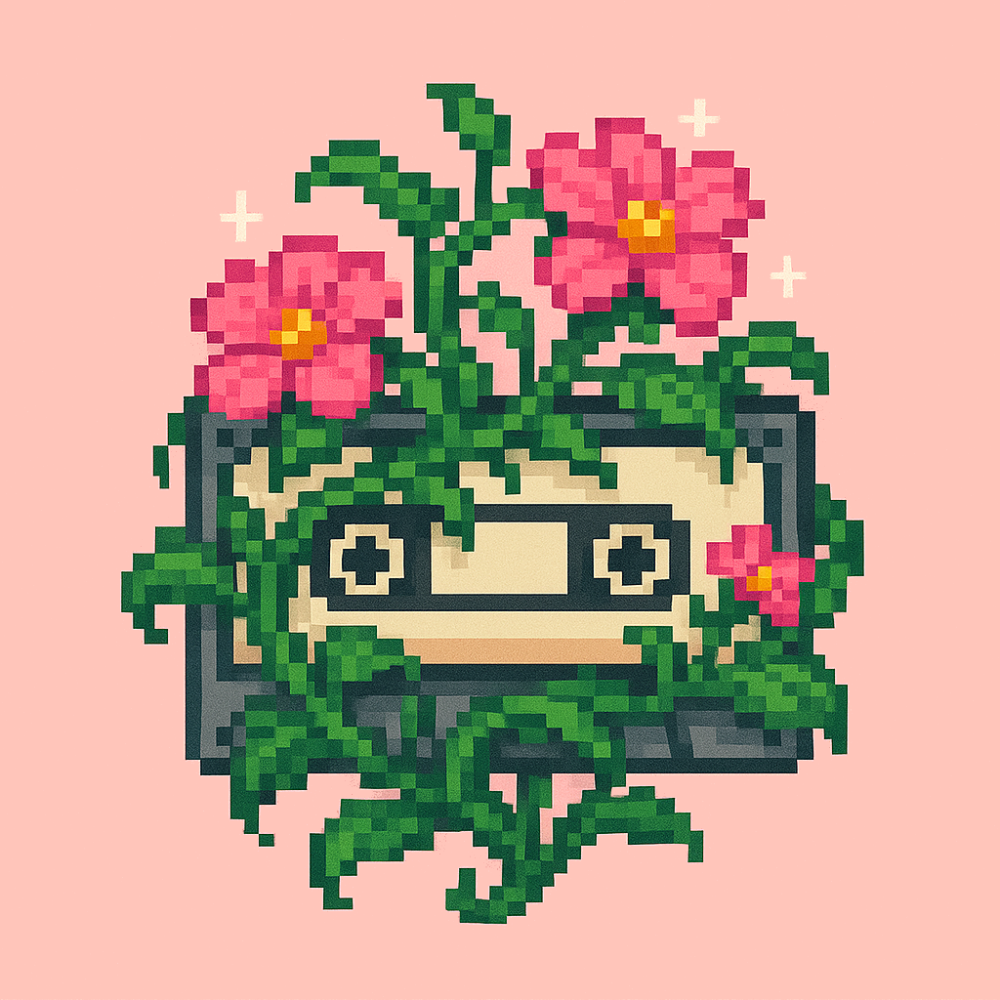

um jardim para você.
uma mixtape que brotou, faixa por faixa...
role para explorar
Track 01: sementes de carinho

oi marcela. você realmente faz falta, e essa saudade me fez criar esse pequeno lugar. espero que goste.
Ouvir Track 01"If the sky is pink & white, if the ground is black and yellow. It's the same way you showed me"
Track 02: acordes silenciados
sei que tudo ficou estranho, mas... eu sinto falta das nossas conversas, da sua companhia.
Ouvir Track 02"Quantas saudades eu senti, e de tristezas vou viver. E aquele adeus não pude dar"
Track 03: melodia da esperança
a verdade é que você é muito importante pra mim. sinto falta da sua amizade... gostaria muito se, um dia, pudéssemos voltar a conversar, mesmo que só como amigos.
Ouvir Track 03"Are we still friends? Can we be friends?"
Track 04: no seu ritmo
fiz isso como um presente, você não tem obrigação nenhuma de responder. entendo e respeito totalmente sua decisão, qualquer que seja.
Ouvir Track 04"I care for you still and I will (and I will) forever"
a mixtape completa: seu jardim.
cada 'Track' que você viu florescer neste jardim é uma música que pensei baseado no que escrevi. é a trilha sonora desse pequeno lugar, feito com carinho. espero que possamos voltar a se falar algum dia.
Track final"Um belo sonho veio então, despertar minha vontade. Tudo vale a pena pra te reencontrar"
com carinho,
niel.